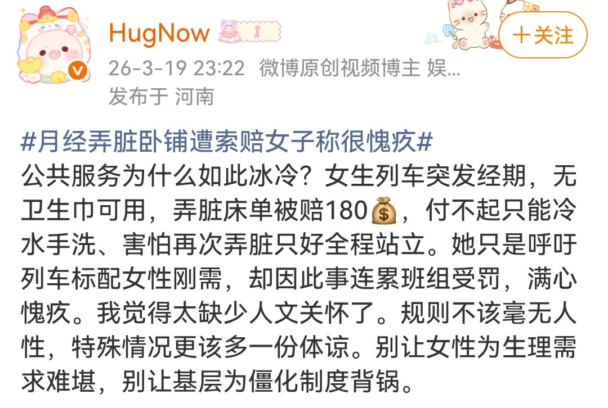

The Raven in the Rain🏳️🌈
@Raincandy_1937
RT @EgonuBoskovic: ［转载微博］“女性就是太善良，像烟人一样到处吸烟就会有专门吸烟区，火车上多蹭蹭经血，多几次这样事件人家为了管理成本自然会卖卫生巾了。唉😔女性还是素质太高，权益哪有这么难争取。女士们，只有到处流血，才有卫生巾。” …

谢绝娣
@EgonuBoskovic
［转载微博］“女性就是太善良，像烟人一样到处吸烟就会有专门吸烟区，火车上多蹭蹭经血，多几次这样事件人家为了管理成本自然会卖卫生巾了。唉😔女性还是素质太高，权益哪有这么难争取。女士们，只有到处流血，才有卫生巾。” https://t.co/P4Z5Y7zMXf